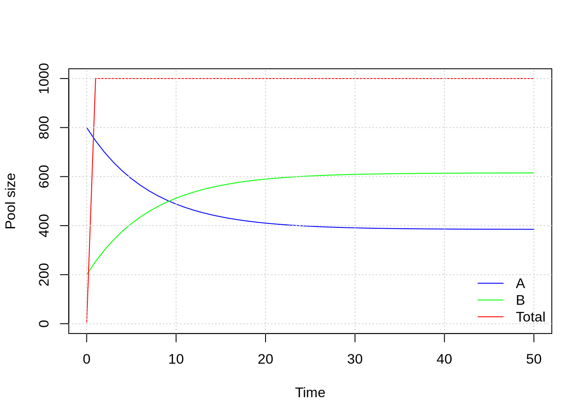

2 Week 1: Numerical Modelling
2.1 Rstudio
Follow these steps to run RStudio on Queen’s High Performance Computer:
- Log into: https://login.cac.queensu.ca/
- Click on “Jupyter Server”
- Select Python version 3.11.5
- Set your Memory (GB) to 16
- Set your Runtime (in hours) to the number of hours you wish to work (e.g. 3)
- Click on “Launch”
- Click on “Connect to Jupyter” once the button appears
- On the top left you see “Filter available modules …”
- Inside that box write “rstudio”
- Under Available Modules, hover over “rstudio-server/4.5” and click on the load button. It is important that you choose version 4.5. No other version will work properly.
- In the Launcher/Notebook, click on the RStudio icon.
- A new window appears with RStudio
- Copy the tutorial template to your home directory:
Open the
Week01_ENSC-ESM.Rmdfile that you just copiedThis is a template for completing the tutorial
You can run any code inside code chunks and add any comments as text outside the code chunks
Each week you will complete one of those tutorials and submit them in onQ
All questions are directly answered in onQ
Let’s begin by learning the basic R syntax
2.3 Numerical Integration
The chunk below gives an example of a simple numerical model. The model consists of a set of two Ordinary Differential Equations (ODEs):
\[ \frac{dA}{dt} = k_{ba} B - k_{ab} A \]
\[ \frac{dB}{dt} = k_{ab} A - k_{ba} B \]
where \(A\) is the atmospheric carbon pool and \(B\) is the biosphere carbon pool. The code below integrates this set of ODEs forward in time. The model thereby simulates the exchange of carbon between the atmosphere and the biosphere
# Initial values
A <- 800
B <- 200
# Parameter values
k_ba <- 0.05
k_ab <- 0.08
# Integration settings
dt <- 1 # Time step
t_end <- 50 # End time
times <- seq(0, t_end, by = dt)
# Store results
A_out <- numeric(length(times))
B_out <- numeric(length(times))
total_out <- numeric(length(times))
# Store initial values
A_out[1] <- A
B_out[1] <- B
# Euler integration
for (i in 2:length(times)) {
# Calculate tendencies using values
# from the previous time step
dA <- k_ba * B - k_ab * A
dB <- k_ab * A - k_ba * B
# Update state variables
A <- A + dA * dt
B <- B + dB * dt
total <- A + B
# Store results
A_out[i] <- A
B_out[i] <- B
total_out[i] <- total
}
# Combine results
output <- data.frame(
time = times,
A = A_out,
B = B_out,
total = total_out
)
# Plot
plot(
output$time,
output$A,
type = "l",
col = "blue",
xlab = "Time",
ylab = "Pool size",
ylim = range(c(output$A, output$B, output$total))
)
lines(
output$time,
output$B,
col = "green"
)
lines(
output$time,
output$total,
col = "red"
)
legend(
"bottomright",
legend = c("A", "B", "Total"),
lty = 1,
col = c("blue", "green", "red"), bty = "n"
)
grid()
Answer all questions in onQ
- Question: Which variables are the prognostic variables?
- Question: Which variables is the diagnostic variable?
- Question: What happens if the integration time step is 10?
- Reservoirs and fluxes
- Prognostic and diagnostic variables
- Numerical integration
- Conservation of mass and energy
2.4 QUEST Set-up
In this course you will run climate simulations using Queen’s University Conceptual Earth System Model (QUEST). Run the code chunk below to create a run_quest folder and to copy the QUEST configuration files into it:
myDir <- file.path(getwd(), "run_quest")
dir.create(myDir)
file.copy(
from = "/global/home/hpc5112/ENSC-ESM/QUEST/QUEST/inst/config",
to = myDir,
recursive = TRUE
)Let’s conduct a test run:
# Load the QUEST package:
library(quest)
# Set the path to the configuration files:
config.path <- file.path(getwd(), "run_quest/config")
# Load the configuration files:
config <- config_load(path = config.path)
# Define the simulation years (start year BC, end year, time step):
years <- seq(1850, 2024, by = 1)
# Run QUEST:
output <- core_run_esm(config, times = years)## Warning in mean.default(out$N_total): argument is not numeric or logical: returning
## NA
# Plot QUEST output:
utils_plot(config, output, my.xlim = c(1950, 2024), PNGfile = TRUE)## png
## 2The
utils_plot()function produces a PNG file with the model output (output.png). If all went well, the resulting figure file is now in your home directory. Open it using the Files panel on your right and have a look at at its content.Sometimes we just want to quickly plot individual variables. You can define your variables of interest using the
variablesoption, and turn off the generation of a PNG file by setting thePNGfileoption to FALSE:
par(mfrow = c(2, 1), mar = c(3, 5, 2, 1))
utils_plot(config, output, variables = c("T_atm_global", "F_CO2", "A_sic"), my.xlim = c(1800, 2024), PNGfile = FALSE)You can also explore the output directly. Let’s make a statistical summary of all variables:
summary(output)## times T_atm_L T_atm_H C_atm T_ocn_SL
## Min. :1850 Min. :293.9 Min. :268.6 Min. :604.8 Min. :292.0
## 1st Qu.:1894 1st Qu.:294.7 1st Qu.:269.1 1st Qu.:625.9 1st Qu.:293.7
## Median :1937 Median :294.8 Median :269.2 Median :658.6 Median :293.7
## Mean :1937 Mean :294.9 Mean :269.4 Mean :683.3 Mean :293.7
## 3rd Qu.:1980 3rd Qu.:295.0 3rd Qu.:269.7 3rd Qu.:720.6 3rd Qu.:293.8
## Max. :2024 Max. :295.5 Max. :270.6 Max. :901.4 Max. :294.3
## T_ocn_SH T_ocn_DL T_ocn_DH S_ocn_SL S_ocn_SH
## Min. :271.8 Min. :277.3 Min. :274.0 Min. :35.11 Min. :33.59
## 1st Qu.:272.5 1st Qu.:277.3 1st Qu.:274.1 1st Qu.:35.11 1st Qu.:34.51
## Median :272.8 Median :277.4 Median :274.3 Median :35.12 Median :34.64
## Mean :272.8 Mean :277.4 Mean :274.4 Mean :35.13 Mean :34.51
## 3rd Qu.:273.0 3rd Qu.:277.4 3rd Qu.:274.6 3rd Qu.:35.14 3rd Qu.:34.66
## Max. :275.4 Max. :277.4 Max. :274.9 Max. :35.17 Max. :34.67
## S_ocn_DL S_ocn_DH DIC_SL DIC_SH DIC_DL
## Min. :34.72 Min. :34.60 Min. :2.126 Min. :2.196 Min. :2.317
## 1st Qu.:34.72 1st Qu.:34.60 1st Qu.:2.211 1st Qu.:2.207 1st Qu.:2.319
## Median :34.73 Median :34.61 Median :2.263 Median :2.248 Median :2.321
## Mean :34.73 Mean :34.61 Mean :2.246 Mean :2.244 Mean :2.321
## 3rd Qu.:34.73 3rd Qu.:34.61 3rd Qu.:2.290 3rd Qu.:2.277 3rd Qu.:2.323
## Max. :34.73 Max. :34.66 Max. :2.303 Max. :2.293 Max. :2.325
## DIC_DH Alk_SL Alk_SH Alk_DL Alk_DH
## Min. :2.278 Min. :2.301 Min. :2.395 Min. :2.500 Min. :2.535
## 1st Qu.:2.278 1st Qu.:2.387 1st Qu.:2.406 1st Qu.:2.502 1st Qu.:2.543
## Median :2.280 Median :2.442 Median :2.446 Median :2.504 Median :2.556
## Mean :2.284 Mean :2.425 Mean :2.442 Mean :2.504 Mean :2.560
## 3rd Qu.:2.288 3rd Qu.:2.472 3rd Qu.:2.475 3rd Qu.:2.506 3rd Qu.:2.576
## Max. :2.300 Max. :2.488 Max. :2.491 Max. :2.507 Max. :2.600
## C_lnd_L C_lnd_H A_sic h_ice DIN_ocn_SL
## Min. :1296 Min. :743.8 Min. :0.1821 Min. :1000 Min. :0.008
## 1st Qu.:1296 1st Qu.:743.8 1st Qu.:0.2152 1st Qu.:1000 1st Qu.:0.008
## Median :1296 Median :743.8 Median :0.2381 Median :1000 Median :0.008
## Mean :1296 Mean :743.8 Mean :0.2267 Mean :1000 Mean :0.008
## 3rd Qu.:1296 3rd Qu.:743.8 3rd Qu.:0.2381 3rd Qu.:1000 3rd Qu.:0.008
## Max. :1296 Max. :743.8 Max. :0.2381 Max. :1000 Max. :0.008
## DIN_ocn_SH DIN_ocn_DL DIN_ocn_DH P_bio_SL
## Min. :0.022 Min. :0.033 Min. :0.03 Min. :0.0006831
## 1st Qu.:0.022 1st Qu.:0.033 1st Qu.:0.03 1st Qu.:0.0006831
## Median :0.022 Median :0.033 Median :0.03 Median :0.0006831
## Mean :0.022 Mean :0.033 Mean :0.03 Mean :0.0006831
## 3rd Qu.:0.022 3rd Qu.:0.033 3rd Qu.:0.03 3rd Qu.:0.0006831
## Max. :0.022 Max. :0.033 Max. :0.03 Max. :0.0006831
## P_bio_SH Z_bio_SL Z_bio_SH DET_ocn_SL
## Min. :0.0006831 Min. :0.0003839 Min. :0.0003839 Min. :0.003
## 1st Qu.:0.0006831 1st Qu.:0.0003839 1st Qu.:0.0003839 1st Qu.:0.003
## Median :0.0006831 Median :0.0003839 Median :0.0003839 Median :0.003
## Mean :0.0006831 Mean :0.0003839 Mean :0.0003839 Mean :0.003
## 3rd Qu.:0.0006831 3rd Qu.:0.0003839 3rd Qu.:0.0003839 3rd Qu.:0.003
## Max. :0.0006831 Max. :0.0003839 Max. :0.0003839 Max. :0.003
## DET_ocn_SH DET_ocn_DL DET_ocn_DH time F_fw_L
## Min. :0.005 Min. :0.002 Min. :0.002 Min. :1850 Min. :-465035
## 1st Qu.:0.005 1st Qu.:0.002 1st Qu.:0.002 1st Qu.:1894 1st Qu.:-377335
## Median :0.005 Median :0.002 Median :0.002 Median :1937 Median :-334280
## Mean :0.005 Mean :0.002 Mean :0.002 Mean :1937 Mean :-344728
## 3rd Qu.:0.005 3rd Qu.:0.002 3rd Qu.:0.002 3rd Qu.:1980 3rd Qu.:-317029
## Max. :0.005 Max. :0.002 Max. :0.002 Max. :2024 Max. :-279840
## F_fw_H F_fw_ice_L F_fw_ice_H F_L F_H NPP_lnd
## Min. :279840 Min. :0 Min. :0 Min. :0 Min. :0 Min. :0
## 1st Qu.:317029 1st Qu.:0 1st Qu.:0 1st Qu.:0 1st Qu.:0 1st Qu.:0
## Median :334280 Median :0 Median :0 Median :0 Median :0 Median :0
## Mean :344728 Mean :0 Mean :0 Mean :0 Mean :0 Mean :0
## 3rd Qu.:377335 3rd Qu.:0 3rd Qu.:0 3rd Qu.:0 3rd Qu.:0 3rd Qu.:0
## Max. :465035 Max. :0 Max. :0 Max. :0 Max. :0 Max. :0
## RH_lnd R_net_TOA Q S_ocn_global Alk_global
## Min. :0 Min. :-0.6307 Min. :12206497 Min. :34.71 Min. :2.513
## 1st Qu.:0 1st Qu.:-0.5748 1st Qu.:26614503 1st Qu.:34.71 1st Qu.:2.513
## Median :0 Median :-0.4841 Median :27206345 Median :34.71 Median :2.513
## Mean :0 Mean :-0.3998 Mean :26278624 Mean :34.71 Mean :2.513
## 3rd Qu.:0 3rd Qu.:-0.2314 3rd Qu.:27502328 3rd Qu.:34.71 3rd Qu.:2.513
## Max. :0 Max. : 0.1463 Max. :27603735 Max. :34.71 Max. :2.513
## DIC_global DIC_total rho_SL rho_SH rho_DL
## Min. :2.307 Min. :37174 Min. :1025 Min. :1027 Min. :1027
## 1st Qu.:2.307 1st Qu.:37174 1st Qu.:1025 1st Qu.:1028 1st Qu.:1027
## Median :2.307 Median :37174 Median :1025 Median :1028 Median :1027
## Mean :2.307 Mean :37174 Mean :1025 Mean :1028 Mean :1027
## 3rd Qu.:2.307 3rd Qu.:37174 3rd Qu.:1025 3rd Qu.:1028 3rd Qu.:1027
## Max. :2.307 Max. :37174 Max. :1025 Max. :1028 Max. :1027
## rho_DH C_atm_ppmv F_CO2 T_atm_global alpha_H
## Min. :1028 Min. :280.0 Min. :0.0000 Min. :287.0 Min. :0.2458
## 1st Qu.:1028 1st Qu.:294.6 1st Qu.:0.3052 1st Qu.:287.3 1st Qu.:0.2570
## Median :1028 Median :310.0 Median :0.6098 Median :287.4 Median :0.2648
## Mean :1028 Mean :320.9 Mean :0.7833 Mean :287.5 Mean :0.2610
## 3rd Qu.:1028 3rd Qu.:337.6 3rd Qu.:1.1231 3rd Qu.:287.6 3rd Qu.:0.2648
## Max. :1028 Max. :420.9 Max. :2.4452 Max. :288.2 Max. :0.2648
## Energy_total Energy_conserved Carbon_total
## Min. :1.531e+27 Min. :1.532e+27 Min. :37779
## 1st Qu.:1.531e+27 1st Qu.:1.532e+27 1st Qu.:37800
## Median :1.532e+27 Median :1.532e+27 Median :37833
## Mean :1.532e+27 Mean :1.532e+27 Mean :37857
## 3rd Qu.:1.532e+27 3rd Qu.:1.532e+27 3rd Qu.:37895
## Max. :1.532e+27 Max. :1.532e+27 Max. :38075You can store your output as a .rds file for later use:
saveRDS(output, "testRun.rds")Then you can access the file content like this:
data <- readRDS("testRun.rds")- To extract a single variable:

The way how you will conduct experiments with QUEST is by conducting expeirments using different model configurations. Let’s see what type of model configurations there are:
## Length Class Mode
## config.path 1 -none- character
## params_ranges 89 -none- list
## flags 11 -none- list
## spy 1 -none- numeric
## obs_tran 5 data.frame list
## var_meta 98 -none- list
## cost_weights 6 -none- list
## params 89 -none- list
## prescribed_values 2 -none- list
## forcing 3 -none- list
## spd 1 -none- numeric
## prescribed_diagnostics 1 -none- list
## prescribed_fluxes 9 -none- list
## initial_values 35 -none- numeric
## gC_to_molN 1 -none- numeric
## params_max 58 -none- list
## params_min 58 -none- list
## obs 38 -none- list
## params_calib 58 -none- listYou see there are many different configuration settings. One of the more important ones is flags:
print(config$flags)## $run_AirSeaCarbon
## [1] FALSE
##
## $run_atmosphere
## [1] TRUE
##
## $run_ocean
## [1] TRUE
##
## $run_npzd
## [1] FALSE
##
## $run_land
## [1] FALSE
##
## $run_sic
## [1] FALSE
##
## $run_icesheets
## [1] FALSE
##
## $anthropogenic_emissions
## [1] FALSE
##
## $prescribed_CO2
## [1] TRUE
##
## $prescribed_seaice
## [1] TRUE
##
## $diagnose_carbonates
## [1] FALSEFor instance, if $run_ocean is TRUE then you have configured the model such that the ocean dynamically evolves. If it is set to FALSE then all its prognostic variables remain static and do not evolve in time. You can change those settings by editing the config_flags.R file located in run_quest/config.